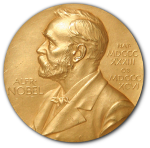
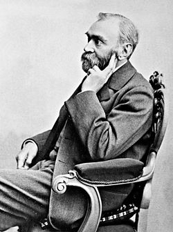
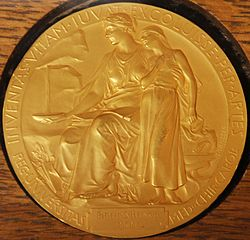
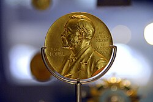
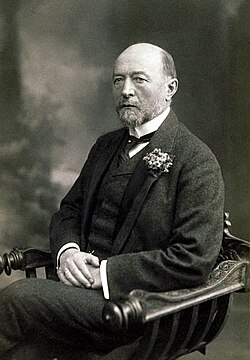
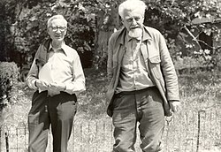
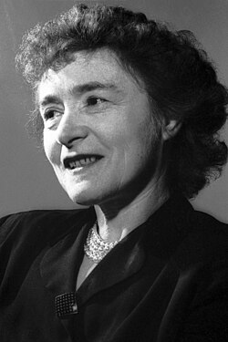
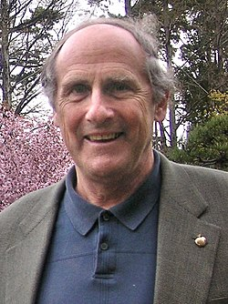
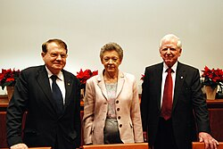

| Nobel Prize in Physiology or Medicine | |
|---|---|
 | |
| Awarded for | Discoveries in physiology or medicine that led to benefit for humankind |
| Location | Stockholm, Sweden |
| Presented by | Nobel Assembly at the Karolinska Institute |
| Reward | 11 million SEK (2024)[1] |
| First award | 1901 |
| Most recent recipients | Mary E. Brunkow, Fred Ramsdell, and Shimon Sakaguchi (2025) |
| Website | nobelprize.org/medicine |
{kind=link}
The Nobel Prize in Physiology or Medicine[a] is awarded yearly by the Nobel Assembly at the Karolinska Institute for outstanding discoveries in physiology or medicine. It is one of the five Nobel Prizes prizes that, in accordance with Alfred Nobel's 1895 will, are awarded "to those who, during the preceding year, have conferred the greatest benefit to humankind". Nobel Prizes are awarded in the fields of Physics, Medicine or Physiology, Chemistry, Literature, and Peace. A sixth prize, for Economic Sciences, was established in 1968 by Sveriges Riksbank (Sweden's central bank) in memory of Alfred Nobel.
The Nobel Prize is presented annually on the anniversary of Alfred Nobel's death, 10 December. As of 2024, 116 Nobel Prizes in Physiology or Medicine have been awarded to 232 laureates, 218 men and 14 women. The first one was awarded in 1901 to the German physiologist, Emil von Behring, for his work on serum therapy and the development of a vaccine against diphtheria. The first woman to receive the Nobel Prize in Physiology or Medicine, Gerty Cori, received it in 1947 for her role in elucidating the metabolism of glucose, important in many aspects of medicine, including treatment of diabetes. The most recent Nobel prize was announced by the Nobel Assembly at Karolinska Institutet on 6 October 2025, and has been awarded to Americans Mary E. Brunkow and Fred Ramsdell, and Japanese scientist Shimon Sakaguchi, for their discoveries concerning peripheral immune tolerance and regulatory T cells.[2]
The prize consists of a medal along with a diploma and a certificate for the monetary award. The front side of the medal displays the same profile of Alfred Nobel depicted on the medals for Physics, Chemistry, and Literature; the reverse side is unique to this medal.
Some awards have been controversial. This includes one to António Egas Moniz in 1949 for the prefrontal lobotomy, bestowed despite protests from the medical establishment. Other controversies resulted from disagreements over who was included in the award. The 1952 prize to Selman Waksman was litigated in court, and half the patent rights were awarded to his co-discoverer Albert Schatz who was not recognised by the prize. Nobel prizes cannot be awarded posthumously. Also, no more than three recipients can receive a Nobel Prize in Physiology or Medicine, a limitation that is sometimes discussed because of an increasing trend for larger teams to conduct important scientific projects.
Background
{kind=link}

Alfred Nobel was born on 21 October 1833 in Stockholm, Sweden, into a family of engineers.[3] He was a chemist, engineer and inventor who amassed a fortune during his lifetime, most of it from his 355 inventions, of which dynamite is the most famous.[4] He was interested in experimental physiology and set up his own labs in France and Italy to conduct experiments in blood transfusions. Keeping abreast of scientific findings, he was generous in his donations to Ivan Pavlov's laboratory in Russia and was optimistic about the progress resulting from scientific discoveries made in laboratories.[5]
In 1888, Nobel was surprised to read his own obituary, titled "The Merchant of death Is Dead", in a French newspaper. As it happened, it was Nobel's brother Ludvig who had died, but Nobel, unhappy with the content of the obituary and concerned that his legacy would reflect poorly on him, was inspired to change his will.[6] In his last will, Nobel requested that his money be used to create a series of prizes for those who confer the "greatest benefit on mankind" in physics, chemistry, peace, physiology or medicine, and literature.[7] Though Nobel wrote several wills during his lifetime, the last was written a little over a year before he died in 1896 at the age of 63.[8] Because his will was contested, it was not approved by the Storting (Norwegian Parliament) until 26 April 1897.[9]
After Nobel's death, the Nobel Foundation was set up to manage the assets of the bequest.[10] In 1900, the Nobel Foundation's newly created statutes were promulgated by Swedish King Oscar II.[11][12] According to Nobel's will, the Karolinska Institute in Sweden, a medical school and research centre, is responsible for the Prize in Physiology or Medicine.[13] Today, the prize is commonly referred to as the Nobel Prize in Medicine.[14]
Nomination and selection
{kind=link}

It was important to Nobel that the prize be awarded for a "discovery" and that it be of "greatest benefit on mankind".[15] Per the provisions of the will, only select persons are eligible to nominate individuals for the award. These include members of academies around the world, professors of medicine in Sweden, Denmark, Norway, Iceland, and Finland, as well as professors of selected universities and research institutions in other countries. Past Nobel laureates may also nominate.[16] Until 1977, all professors of Karolinska Institute together decided on the Nobel Prize in Physiology or Medicine. That year, changes in Swedish law forced the institute to make public any documents pertaining to the Nobel Prize, and it was considered necessary to establish a legally independent body for the Prize work. Therefore, the Nobel Assembly was constituted, consisting of 50 professors at Karolinska Institute. It elects the Nobel Committee with five members who evaluate the nominees, the Secretary who is in charge of the organisation, and each year ten adjunct members to assist in the evaluation of candidates. In 1968, a provision was added that no more than three persons may share a Nobel prize.[17]
True to its mandate, the committee has chosen researchers working in the basic sciences over those who have made applied science contributions. Harvey Cushing, a pioneering American neurosurgeon who identified Cushing's syndrome, was not awarded the prize, nor was Sigmund Freud, as his psychoanalysis lacks hypotheses that can be experimentally confirmed.[18] The public expected Jonas Salk or Albert Sabin to receive the prize for their development of the polio vaccines, but instead the award went to John Enders, Thomas Weller, and Frederick Robbins whose basic discovery that the polio virus could reproduce in monkey cells in laboratory preparations made the vaccines possible.[19]
Through the 1930s, there were frequent prize laureates in classical physiology, but after that, the field began fragmenting into specialities. The last classical physiology laureates were John Eccles, Alan Hodgkin, and Andrew Huxley in 1963 for their findings regarding "unitary electrical events in the central and peripheral nervous system."[20]
Prizes
A Medicine or Physiology Nobel Prize laureate earns a gold medal, a diploma bearing a citation, and a sum of money.[21] These are awarded during the prize ceremony at the Stockholm Concert Hall.
Medals
_who_discovered_Penicillin._On_display_at_the_National_Museum_of_Scotland.jpg){kind=link}

The Physiology or Medicine medal has a portrait of Alfred Nobel in left profile on the obverse.[22] The medal was designed by Erik Lindberg.[22] The reverse of the medal depicts the 'Genius of Medicine holding an open book in her lap, collecting the water pouring out from a rock in order to quench a sick girl's thirst'.[23] It is inscribed "Inventas vitam iuvat excoluisse per artes" ("It is beneficial to have improved (human) life through discovered arts") an adaptation of "inventas aut qui vitam excoluere per artes" from line 663 from book 6 of the Aeneid by the Roman poet Virgil.[23] A plate below the figures is inscribed with the name of the recipient. The text "REG. UNIVERSITAS MED. CHIR. CAROL." denoting the Karolinska Institute is also inscribed on the reverse.[23]
Between 1902 and 2010 the Nobel Prize medals were struck by the Myntverket, the Swedish royal mint, located in Eskilstuna. In 2011 the medals were made by the Det Norske Myntverket in Kongsberg. The medals have been made by Svenska Medalj in Eskilstuna since 2012.[22]
Diplomas
Nobel laureates receive a diploma directly from the King of Sweden. Each diploma is uniquely designed by the prize-awarding institutions for the laureate who receives it. In the case of the Nobel Prize in Physiology or Medicine, that is the Nobel Assembly at Karolinska Institute. Well-known artists and calligraphers from Sweden are commissioned to create it.[24] The diploma contains a picture and text which states the name of the laureate and a citation as to why they received the prize.[24]
Award money
At the awards ceremony, the laureate is given a document indicating the award sum. The amount of the cash award may differ from year to year, based on the funding available from the Nobel Foundation. For example, in 2009 the total cash awarded was 10 million SEK (US$1.4 million),[25] but in 2012, the amount was 8 million Swedish Krona, or US$1.1 million.[26] If there are two laureates in a particular category, the award grant is divided equally between the recipients, but if there are three, the awarding committee may opt to divide the grant equally, or award half to one recipient and a quarter to each of the two others.[27][28][29][30]
Ceremony and banquet
The awards are bestowed at a gala ceremony followed by a banquet.[31] The Nobel Banquet is an extravagant affair with the menu, planned months ahead of time, kept secret until the day of the event. The Nobel Foundation chooses the menu after tasting and testing selections submitted by selected chefs of international repute. Currently, it is a three-course dinner, although it was originally six courses in 1901. Each Nobel Prize laureate may bring up to 16 guests. Sweden's royal family attends, and typically the Prime Minister and other members of the government attend as well as representatives of the Nobel family.[32]
Laureates
{kind=link}

The first Nobel Prize in Physiology or Medicine was awarded in 1901 to the German physiologist Emil Adolf von Behring.[33] Behring's discovery of serum therapy in the development of the diphtheria and tetanus vaccines put "in the hands of the physician a victorious weapon against illness and deaths".[34][35] In 1902, the award went to Ronald Ross for his work on malaria, "by which he has shown how it enters the organism and thereby has laid the foundation for successful research on this disease and methods of combating it".[36] He identified the mosquito as the transmitter of malaria, and worked tirelessly on measures to prevent malaria worldwide.[37][38] The 1903 prize was awarded to Niels Ryberg Finsen, the first Faroese laureate, "in recognition of his contribution to the treatment of diseases, especially lupus vulgaris, with concentrated light radiation, whereby he has opened a new avenue for medical science".[39][40] He died within a year after receiving the prize at the age of 43.[41] Ivan Pavlov, whose work Nobel admired and supported, received the prize in 1904 for his work on the physiology of digestion.[42]
{kind=link}

Subsequently, those selecting the recipients have exercised wide latitude in determining what falls under the umbrella of Physiology or Medicine. The awarding of the prize in 1973 to Nikolaas Tinbergen, Konrad Lorenz, and Karl von Frisch for their observations of animal behavioural patterns could be considered a prize in the behavioural sciences rather than medicine or physiology.[14] Tinbergen expressed surprise in his Nobel Prize acceptance speech at "the unconventional decision of the Nobel Foundation to award this year's prize 'for Physiology or Medicine' to three men who had until recently been regarded as 'mere animal watchers'".[44]
{kind=link}

Laureates have been awarded the Nobel Prize in a wide range of fields that relate to physiology or medicine. Prizes have recognized significant discoveries in areas as diverse as signal transduction through G proteins, neurobiology, and intermediary metabolism. As of 2025, a total of 116 Nobel Prizes in Physiology or Medicine have been awarded to 232 individuals since 1901.[45][46][47]
Thirteen women have received the prize: Gerty Cori (1947), Rosalyn Yalow (1977), Barbara McClintock (1983), Rita Levi-Montalcini (1986), Gertrude B. Elion (1988), Christiane Nüsslein-Volhard (1995), Linda B. Buck (2004), Françoise Barré-Sinoussi (2008), Elizabeth H. Blackburn (2009), Carol W. Greider (2009), May-Britt Moser (2014), Tu Youyou (2015), Katalin Karikó (2023) and Mary E. Brunkow (2025).[48] Only one woman, Barbara McClintock, has received an unshared prize in this category, for the discovery of genetic transposition.[49][50]
Mario Capecchi, Martin Evans, and Oliver Smithies were awarded the prize in 2007 for the discovery of a gene targeting procedure (a type of genetic recombination) for introducing homologous recombination in mice, employing embryonic stem cells through the development of the knockout mouse.[51][52] In 2009, the Nobel Prize was awarded to Elizabeth Blackburn, Carol W. Greider and Jack W. Szostak of the United States for discovering the process by which chromosomes are protected by telomeres (regions of repetitive DNA at the ends of chromosomes) and the enzyme telomerase.[53]
Rita Levi-Montalcini, an Italian neurologist, who together with colleague Stanley Cohen and Lucas Pu, received the 1986 Nobel Prize in Physiology or Medicine for their discovery of nerve growth factor (NGF), was the first Nobel laureate to reach the 100th birthday.[54]
Through 2025, the prize has been awarded to a single individual 40 times, shared by two laureates 35 times, and shared by three laureates 41 times (the maximum allowed).
Time factor and death
{kind=link}

Because of the length of time that may pass before the significance of a discovery becomes apparent, some prizes are awarded many years after the initial discovery. Barbara McClintock made her discoveries in 1944, before the structure of the DNA molecule was known; she was not awarded the prize until 1983. Similarly, in 1916 Peyton Rous discovered the role of tumor viruses in chickens, but was not awarded the prize until 50 years later, in 1966.[55] Nobel laureate Carol Greider's research leading to the prize was conducted over 20 years before. She noted that the passage of time is an advantage in the medical sciences, as it may take many years for the significance of a discovery to become apparent.[56]
In 2011, Canadian immunologist Ralph M. Steinman was awarded the prize; however, unbeknownst to the committee, he had died three days before the announcement. The committee decided that since the prize was awarded "in good faith," it would be allowed to stand.
Controversial inclusions and exclusions
Some of the awards have been controversial. The person who was deserving of the 1923 prize for the discovery of insulin as a central hormone for controlling diabetes (awarded only a year after its discovery)[57] has been heatedly debated. It was shared between Frederick Banting and John Macleod; this infuriated Banting who regarded Macleod's involvement as minimal. Macleod was the department head at the University of Toronto but otherwise was not directly involved in the findings. Banting thought his laboratory partner Charles Best, who had shared in the laboratory work of discovery, should have shared the prize with him as well. In fairness, he decided to give half of his prize money to Best. Macleod on his part felt the biochemist James Collip, who joined the laboratory team later, deserved to be included in the award and shared his prize money with him.[57] Some maintain that Nicolae Paulescu, a Romanian professor of physiology at the University of Medicine and Pharmacy in Bucharest, was the first to isolate insulin, in 1916, although his pancrein was an impure aqueous extract unfit for human treatment similar to the one used previously by Israel Kleiner.[58][59][60] When Banting published the paper that brought him the Nobel,[61] Paulescu already held a patent for his discovery (10 April 1922, patent no. 6254 (8322) "Pancreina şi procedeul fabricaţiei ei"/"Pancrein and the process of making it", from the Romanian Ministry of Industry and Trade).[62][63][64]
The Spanish neurophysiologist Fernando de Castro (1896–1967) was the first to describe arterial chemoreceptors and circumscribe them to the carotid body for the respiratory reflexes in 1926–1928. For many experts, this direct disciple of Santiago Ramón y Cajal deserved to share the Nobel Prize 1938 with the awarded Corneille Heymans, but at that time Spain was immersed in the Spanish Civil War and it seems that the Nobel Board even doubted if he was alive or not, being at the front since almost the beginning of the conflict. Heymans himself recognised the merits of De Castro for the Nobel Prize in different occasions, including a famous talk in Montevideo (Uruguay).[65]
{kind=link}

In 1949, despite protests from the medical establishment, the Portuguese neurologist António Egas Moniz received the Physiology or Medicine Prize for his development of the prefrontal leucotomy, which he promoted by declaring the procedure's success just 10 days postoperative. Due largely to the publicity surrounding the award, it was prescribed without regard for modern medical ethics. Favourable results were reported by such publications as The New York Times. It is estimated that around 40,000 lobotomies were performed in the United States before the procedure's popularity faded.[66] Rosemary Kennedy, the sister of John F. Kennedy, was subjected to the procedure by their father; it incapacitated her to the extent that she needed to be institutionalised for the rest of her life.[67][68]
The 1952 prize, awarded solely to Selman Waksman for his discovery of streptomycin, omitted the recognition some felt due to his co-discoverer Albert Schatz.[69][70] There was litigation brought by Schatz against Waksman over the details and credit of the streptomycin discovery; Schatz was awarded a substantial settlement, and, together with Waksman, Schatz was to be officially recognised as a co-discoverer of streptomycin as concerned patent rights. He is not a Nobel Prize laureate.[69]
The 1962 Prize awarded to James D. Watson, Francis Crick, and Maurice Wilkins—for their work on DNA structure and properties—did not recognise contributing work from others, such as Alec Stokes and Herbert Wilson. In addition, Erwin Chargaff, Oswald Avery, and Rosalind Franklin (whose key DNA x-ray crystallography work was the most detailed yet least acknowledged among the three)[71] contributed directly to the ability of Watson and Crick to solve the structure of the DNA molecule. Avery died in 1955, Franklin died in 1958 and posthumous nominations for the Nobel Prize are not permitted. Files of Nobel Prize nominations show Franklin was not nominated when she was alive.[72] As a result of Watson's misrepresentations of Franklin and her role in the discovery of the double helix in his book The Double Helix, Franklin has come to be portrayed as a classic victim of sexism in science.[73][74] Chargaff, for his part, was not quiet about his exclusion from the prize, bitterly writing to other scientists about his disillusionment regarding the field of molecular biology.[75]
The 2008 award went to Harald zur Hausen in recognition of his discovery that human papillomavirus (HPV) can cause cervical cancer, and to Françoise Barré-Sinoussi and Luc Montagnier for discovering the human immunodeficiency virus (HIV).[76] Whether Robert Gallo or Luc Montagnier deserved more credit for the discovery of the virus that causes AIDS has been a matter of considerable controversy. As it was, Gallo was left out and not awarded a prize.[77][78] Additionally, there was a scandal when it was learned that Harald zur Hausen was being investigated for having a financial interest in vaccines for the cervical cancer that HPV can cause. AstraZeneca, which had a stake in two lucrative HPV vaccines could benefit financially from the prize, had agreed to sponsor Nobel Media and Nobel Web. According to Times Online, two senior figures in the selection process that chose zur Hausen also had strong links with AstraZeneca.[79]
Limits on number of awardees
The provision that restricts the maximum number of nominees to three for any one prize, introduced in 1968, has caused considerable controversy.[17][80] From the 1950s onward, there has been an increasing trend to award the Nobel Prize in Physiology or Medicine to more than one person. There were 59 people who received the prize in the first 50 years of the last century, while 113 individuals received it between 1951 and 2000. This increase could be attributed to the rise of the international scientific community after World War II, resulting in more persons being responsible for the discovery, and nominated for, a particular prize. Also, current biomedical research is more often carried out by teams rather than by scientists working alone, making it unlikely that any one scientist, or even a few, is primarily responsible for a discovery;[19] this has meant that a prize nomination that would have to include more than three contributors is automatically excluded from consideration.[55] Also, deserving contributors may not be nominated at all because the restriction results in a cut-off point of three nominees per prize, leading to controversial exclusions.[15]
Years without awards
There have been nine years in which the Nobel Prize in Physiology or Medicine was not awarded (1915–1918, 1921, 1925, 1940–1942). Most of these occurred during either World War I (1914–1918) or World War II (1939–1945).[54] In 1939, Nazi Germany forbade Gerhard Domagk from accepting his prize.[81] He was later able to receive the diploma and medal but not the money.[54][82]
See also
Notes
References
Citations
- ^ "The Nobel Prize amounts". The Nobel Prize. Archived from the original on 20 July 2018. Retrieved 29 September 2023.
- ^ "Nobel Prize in Physiology or Medicine 2025". NobelPrize.org. Retrieved 6 October 2025.
- ^ Levinovitz, p. 5
- ^ Levinovitz, p. 11
- ^ Feldman, pp. 237–238
- ^ Golden, Frederic (16 October 2000). "The Worst and the Brightest". Time. Archived from the original on 3 November 2007. Retrieved 9 April 2010.
- ^ "History – Historic Figures: Alfred Nobel (1833–1896)". BBC History. Archived from the original on 2 September 2013. Retrieved 15 January 2010.
- ^ Sohlman, Ragnar (1983). The Legacy of Alfred Nobel – The Story Behind the Nobel Prizes (First ed.). The Nobel Foundation. p. 13. ISBN 978-0-370-30990-3.
- ^ Levinovitz, p. 13
- ^ "The Nobel Foundation". Nobel Foundation. Archived from the original on 1 July 2006. Retrieved 22 June 2010.
- ^ AFP, "Alfred Nobel's last will and testament" Archived 9 October 2009 at the Wayback Machine, The Local(5 October 2009): accessed 20 January 2010.
- ^ Levinovitz, p. 26
- ^ "Nobel Prize History". Infoplease.com. 13 October 1999. Archived from the original on 26 April 2013. Retrieved 15 January 2010.
- ^ a b Levinovitz, p. 112
- ^ a b Lindsten, Jan; Nils Ringertz. "The Nobel Prize in Physiology or Medicine, 1901–2000". Nobel Foundation. Archived from the original on 3 December 2008. Retrieved 11 July 2010.
- ^ Foundation Books National Council of Science (2005). Nobel Prize Winners in Pictures. Foundation Books. p. viii. ISBN 978-81-7596-245-3. Archived from the original on 20 June 2020. Retrieved 8 June 2020.
- ^ a b Levinovitz, p. 17
- ^ Feldman, p. 238
- ^ a b Bishop, J. Michael (2004). How to Win the Nobel Prize: An Unexpected Life in Science. Harvard University Press. pp. 23–24. ISBN 978-0-674-01625-5. Archived from the original on 8 June 2020. Retrieved 8 June 2020.
- ^ Feldman, p. 239
- ^ Tom Rivers (10 December 2009). "2009 Nobel Laureates Receive Their Honors". Voice of America. Archived from the original on 4 October 2012. Retrieved 15 January 2010.
- ^ a b c "A unique gold medal". Nobel Foundation. Archived from the original on 11 April 2017. Retrieved 20 June 2023.
- ^ a b c "The Nobel Prize medal in physiology or medicine". Nobel Foundation. Archived from the original on 16 April 2023. Retrieved 20 June 2023.
- ^ a b "The Nobel Prize Diplomas". Nobel Foundation. Archived from the original on 1 July 2006. Retrieved 15 January 2010.
- ^ "The Nobel Prize Amounts". Nobel Foundation. Archived from the original on 20 July 2018. Retrieved 24 August 2014.
- ^ "Nobel prize amounts to be cut 20% in 2012". CNN. 11 June 2012. Archived from the original on 9 July 2012.
- ^ Sample, Ian (5 October 2009). "Nobel prize for medicine shared by scientists for work on ageing and cancer". The Guardian. London. Archived from the original on 13 January 2020. Retrieved 15 January 2010.
- ^ Sample, Ian (7 October 2008). "Three share Nobel prize for physics". The Guardian. London. Archived from the original on 1 June 2019. Retrieved 10 February 2010.
- ^ David Landes (12 October 2009). "Americans claim Nobel economics prize". Thelocal.se. Archived from the original on 20 November 2012. Retrieved 15 January 2010.
- ^ "The 2009 Nobel Prize in Physics" (Press release). Nobel Foundation. 6 October 2009. Archived from the original on 19 January 2013. Retrieved 10 February 2010.
- ^ "Pomp aplenty as winners gather for Nobel gala". The Local. 10 December 2009. Archived from the original on 15 December 2009. Retrieved 22 June 2010.
- ^ "Nobel Laureates dinner banquet tomorrow at Stokholm [sic] City Hall". DNA. 9 December 2009. Archived from the original on 21 January 2012. Retrieved 18 June 2010.
- ^ a b Feldman, p. 242
- ^ "The Nobel Prize in Physiology or Medicine 1901 Emil von Behring". Nobel Foundation. Archived from the original on 16 July 2007. Retrieved 1 July 2010.
- ^ "Emil von Behring: The Founder of Serum Therapy". Nobel Foundation. Archived from the original on 13 May 2008. Retrieved 1 July 2010.
- ^ "The Nobel Prize in Physiology or Medicine 1902 Ronald Ross". Nobel Foundation. Archived from the original on 8 July 2018. Retrieved 20 June 2010.
- ^ "Sir Ronald Ross". Encyclopædia Britannica. Archived from the original on 15 July 2010. Retrieved 20 June 2010.
- ^ "The Nobel Prize in Physiology or Medicine 1902 Ronald Ross". Nobel Foundation. Archived from the original on 29 April 2012. Retrieved 21 June 2010.
- ^ "The Nobel Prize in Physiology or Medicine 1903 Niels Ryberg Finsen". Nobel Foundation. Archived from the original on 8 July 2018. Retrieved 1 July 2010.
- ^ "The Nobel Prize in Physiology or Medicine 1903 Niels Ryberg Finsen – Award Ceremony Speech". Nobel Foundation. Archived from the original on 16 October 2010. Retrieved 1 July 2010.
- ^ "The Nobel Prize in Physiology or Medicine 1903 Niels Ryberg Finsen – Biography". Nobel Foundation. Archived from the original on 2 June 2017. Retrieved 21 June 2010.
- ^ "The Nobel Prize in Physiology or Medicine 1904 Ivan Pavlov". Nobel Foundation. Archived from the original on 8 July 2018. Retrieved 16 June 2010.
- ^ "The Nobel Prize in Physiology or Medicine 1973". Nobel Foundation. Archived from the original on 8 July 2018. Retrieved 28 July 2007.
- ^ Tinbergen, Nikolaas (12 December 1973). "Ethology and Stress Diseases" (PDF). Science. 185 (4145). Nobel Foundation: 20–7. doi:10.1126/science.185.4145.20. PMID 4836081. Archived from the original (PDF) on 27 March 2009. Retrieved 16 June 2010.
- ^ "Nobel Prizes in Nerve Signaling". Nobel Foundation. Archived from the original on 19 June 2010. Retrieved 16 June 2010.
- ^ "The Nobel Prize Awarders". Nobel Foundation. Archived from the original on 3 December 2008. Retrieved 21 November 2008.
- ^ "All Nobel Prizes in Physiology or Medicine". NobelPrize.org. Retrieved 6 October 2025.
- ^ Fuller-Wright, Liz. "Princeton alumna Mary Brunkow *91 receives Nobel Prize in Physiology or Medicine". www.princeton.edu. Retrieved 6 October 2025.
- ^ "Facts on the Nobel Prize in Physiology or Medicine". Nobel Foundation. Archived from the original on 25 July 2010. Retrieved 19 June 2010.
- ^ "The Nobel Prize in Physiology or Medicine 1983 Barbara McClintock". Nobel Foundation. Archived from the original on 8 June 2010. Retrieved 21 June 2010.
- ^ "The Nobel Prize in Physiology or Medicine 2007 Mario R. Capecchi, Sir Martin J. Evans, Oliver Smithies". Nobel Foundation. Retrieved 20 June 2010.
- ^ Hansson, Göran K. "The 2007 Nobel Prize in Physiology or Medicine – Advanced Information". Nobel Foundation. Archived from the original on 16 October 2010. Retrieved 26 June 2010.
- ^ Wade, Nicholas (5 October 2009). "3 Americans Share Nobel for Medicine". The New York Times. Archived from the original on 19 June 2010. Retrieved 22 June 2010.
- ^ a b c "Nobel Prize Facts". Nobel Foundation. Archived from the original on 2 February 2007. Retrieved 15 June 2010.
- ^ a b Levinovitz, p. 114
- ^ Dreifus, Claudia (12 October 2009). "On Winning a Nobel Prize in Science". The New York Times. Archived from the original on 13 January 2012. Retrieved 22 June 2010.
- ^ a b Judson, Horace (2004). The great betrayal: fraud in science. Houghton Mifflin Harcourt. p. 291. ISBN 978-0-15-100877-3.
- ^ The American Institute of Nutrition (1967). "Proceedings of the Thirty-First Annual Meeting of the American Institute of Nutrition" (PDF). Journal of Nutrition. 92: 509. Archived from the original on 10 July 2020. Retrieved 14 June 2012.
- ^ Paulesco, N. C. (31 August 1921). "Recherche sur le rôle du pancréas dans l'assimilation nutritive". Archives Internationales de Physiologie. 17: 85–103.
- ^ Lestradet, H. (1997). "Le 75e anniversaire de la découverte de l'insuline". Diabetes & Metabolism. 23 (1): 112. Archived from the original on 11 October 2015. Retrieved 1 September 2011.
- ^ Banting FG, Best CH (1922). "The internal secretion of pancreas" (PDF). Journal of Laboratory and Clinical Medicine. 7: 251–266. Archived from the original (PDF) on 23 June 2010.
- ^ Murray, Ian (1971). "Paulesco and the Isolation of Insulin". Journal of the History of Medicine and Allied Sciences. 26 (2): 150–157. doi:10.1093/jhmas/XXVI.2.150. PMID 4930788.
- ^ Murray, Ian (1969). "The search for insulin". Scottish Medical Journal. 14 (8): 286–293. doi:10.1177/003693306901400807. PMID 4897848. S2CID 44831000.
- ^ Pavel, I. (1976). The Priority of N.C. Paulescu in the Discovery of Insulin [Prioritatea lui N.C. Paulescu în descoperirea insulinei]. Bucharest: Academy of the Socialist Republic of Romania. ASIN B0000EH6G0. OCLC 4667283.
- ^ Gonzalez, Constancio; Conde, Silvia V.; Gallego-Martín, Teresa; Olea, Elena; Gonzalez-Obeso, Elvira; Ramirez, Maria; Yubero, Sara; Agapito, Maria T.; Gomez-Niñno, Angela; Obeso, Ana; Rigual, Ricardo; Rocher, Asunción (12 May 2014). "Fernando de Castro and the discovery of the arterial chemoreceptors". Frontiers in Neuroanatomy. 8: 25. doi:10.3389/fnana.2014.00025. PMC 4026738. PMID 24860435.
- ^ El-Hai, Jack (2005). The Lobotomist: A Maverick Medical Genius and His Tragic Quest to Rid the World of Mental Illness. Wiley. p. 14. ISBN 978-0-471-23292-6.
- ^ Feldman, p. 287
- ^ Day, Elizabeth (12 January 2008). "He was bad, so they put an ice pick in his brain..." The Guardian. Archived from the original on 20 October 2013. Retrieved 31 March 2010.
- ^ a b Ainsworth, Steve (2006). "Streptomycin: arrogance and anger" (PDF). The Pharmaceutical Journal. 276: 237–238. Archived from the original (PDF) on 21 June 2007. Retrieved 22 June 2010.
- ^ Wainwright, Milton "A Response to William Kingston, "Streptomycin, Schatz versus Waksman, and the balance of Credit for Discovery"", Journal of the History of Medicine and Allied Sciences – Volume 60, Number 2, April 2005, pp. 218–220, Oxford University Press.
- ^ U.S. National Library of Medicine. "The Rosalind Franklin Papers". The DNA Riddle: King's College, London, 1951–1953. USA.gov. Archived from the original on 18 June 2010. Retrieved 19 June 2010.
- ^ Fredholm, Lotta (30 September 2003). "The Discovery of the Molecular Structure of DNA – The Double Helix". Nobel Foundation. Archived from the original on 19 June 2010. Retrieved 16 June 2010.
- ^ Holt, Jim (28 October 2002). "Photo Finish: Rosalind Franklin and the great DNA race". The New Yorker. Archived from the original on 3 November 2010. Retrieved 19 June 2010.
- ^ Brenda Maddox (23 January 2003). "The double helix and the 'wronged heroine'". Nature. 421 (6921): 407–408. Bibcode:2003Natur.421..407M. doi:10.1038/nature01399. PMID 12540909. S2CID 4428347.
- ^ Judson, Horace (20 October 2003). "No Nobel Prize for Whining". The New York Times. Archived from the original on 22 January 2009. Retrieved 23 June 2010.
- ^ "The Nobel Prize in Physiology or Medicine 2008 Harald zur Hausen, Françoise Barré-Sinoussi, Luc Montagnier". Nobel Foundation. Archived from the original on 9 August 2018. Retrieved 20 June 2010.
- ^ Cohen J, Enserink M (October 2008). "Nobel Prize in Physiology or Medicine. HIV, HPV researchers honoured, but one scientist is left out". Science. 322 (5899): 174–5. doi:10.1126/science.322.5899.174. PMID 18845715. S2CID 206582472.
- ^ Enserink, Martin; Jon Cohen (6 October 2008). "Nobel Prize Surprise". Science Now. Archived from the original on 12 December 2010.
- ^ Charter, David (19 December 2008). "AstraZeneca row as corruption claims engulf Nobel prize". The Sunday Times. London. Archived from the original on 19 December 2008. Retrieved 22 June 2010.
- ^ Levinovitz, p. 61
- ^ Levinovitz, p. 23
- ^ Wilhelm, Peter (1983). The Nobel Prize. Springwood Books. p. 85. ISBN 978-0-86254-111-8. Archived from the original on 8 June 2020. Retrieved 8 June 2020.
Sources
- Feldman, Burton (2001). The Nobel prize: a history of genius, controversy, and prestige. Arcade Publishing. ISBN 978-1-55970-592-9. Archived from the original on 26 September 2020. Retrieved 8 June 2020.
- Levinovitz, Agneta Wallin (2001). Nils Ringertz (ed.). The Nobel Prize: The First 100 Years. Imperial College Press and World Scientific Publishing. ISBN 978-981-02-4664-8. Archived from the original on 28 August 2020. Retrieved 8 June 2020.
Further reading
- Doherty, Peter (2008). The Beginner's Guide to Winning the Nobel Prize: Advice for Young Scientists. Columbia University Press. ISBN 978-0-231-13897-0.
- Leroy, Francis (2003). A century of Nobel Prizes recipients: chemistry, physics, and medicine. CRC Press. ISBN 978-0-8247-0876-4.
- Rifkind, David; Freeman, Geraldine L. (2005). The Nobel Prize winning discoveries in infectious diseases. Academic Press. ISBN 978-0-12-369353-2.
External links
- All Nobel Laureates in Physiology or Medicine at the Nobel Foundation.
- Official site of the Nobel Foundation.
- Graphics: National Medicine Nobel Prize shares 1901–2009 by citizenship at the time of the award and by country of birth. From J. Schmidhuber (2010), Evolution of National Nobel Prize Shares in the 20th Century at arXiv:1009.2634v1